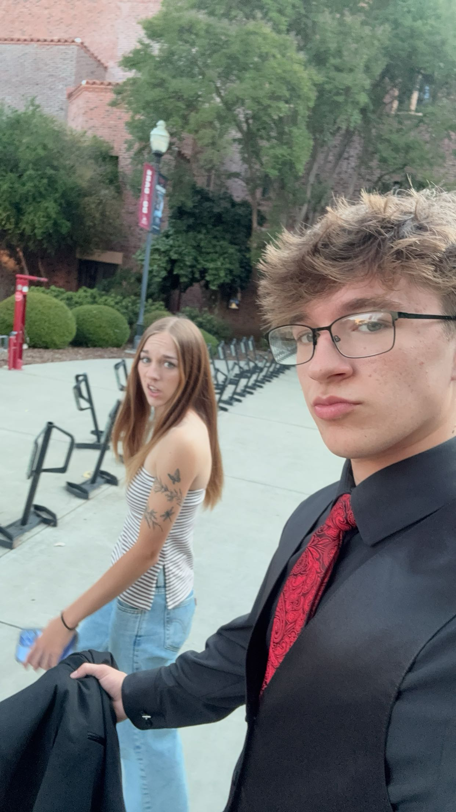
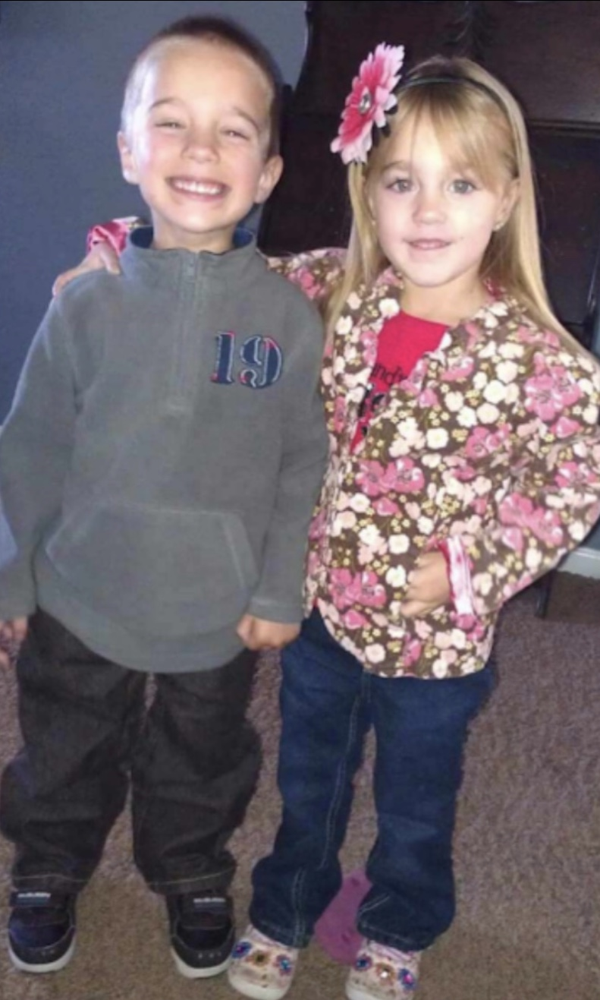
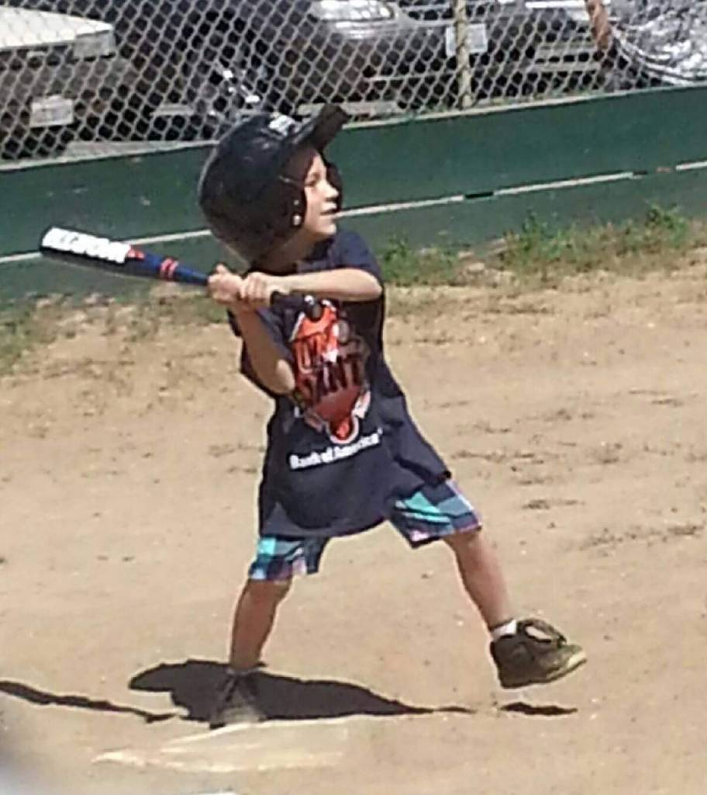
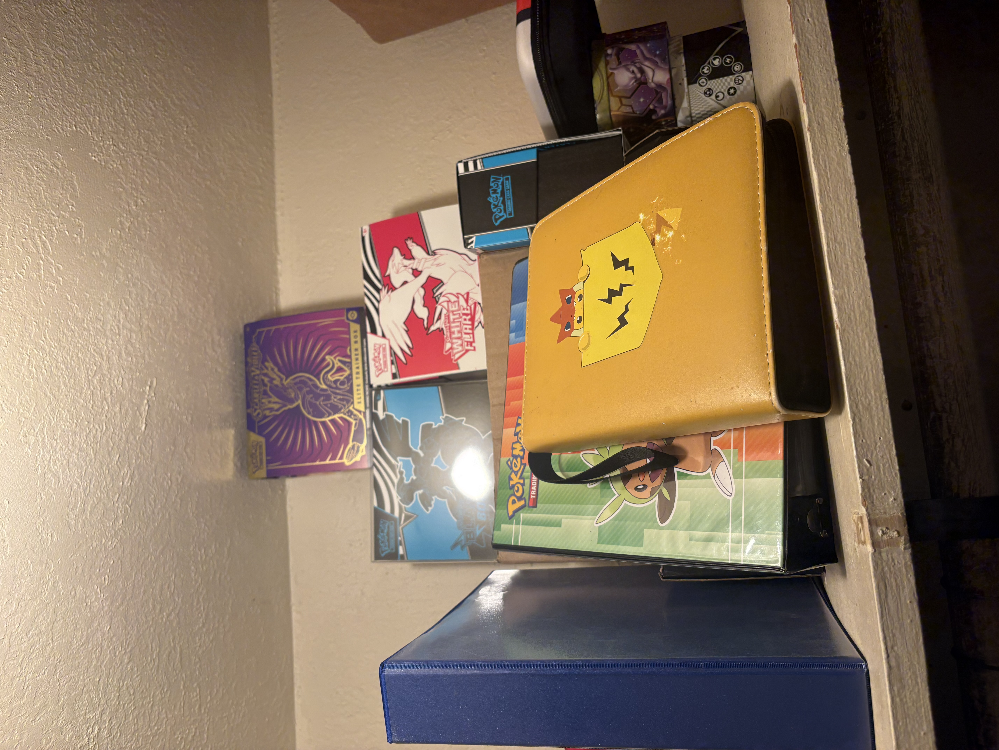

About Me
I'm Caden Bruce, an Electrical Engineering and Computer Science student at UC Berkeley
focused on building technology that connects software and hardware systems. I enjoy tackling
challenging technical problems and developing projects that push my engineering and programming
skills.
I’m originally from Oroville, California, a small Northern California town, and I’m also a
twin and younger brother, which has always given me an interesting perspective on teamwork, competition, and
learning.



Hobbies & Interests
- Robotics and embedded systems
- Gym and Fitness
- Pokémon
- Sports
- Chess


Education
I currently study Electrical Engineering and Computer Science at UC Berkeley, where my
coursework focuses on programming, engineering fundamentals, and computational problem
solving.
Before attending Berkeley, I graduated from Oroville High School as the salutatorian of my
class. During high school, I also took college courses through Butte College, studying
part-time in my junior year and full-time during my senior year while completing my high
school requirements.
Technical Interests
- Robotics
- Embedded systems
- Software engineering
- Artificial intelligence
- Hardware-software integration
Skills
-
Programming: Python, HTML, CSS, JavaScript
-
Engineering & Hardware: Electronics prototyping, sensor integration, embedded systems, and hardware–software interfacing
-
Web Development: Building responsive websites using HTML, CSS, and JavaScript, including layout design, UI styling, and interactive components
-
Problem Solving: Algorithmic thinking, debugging complex programs, and breaking down technical challenges into manageable solutions
-
Tools & Technologies: GitHub, VS Code, and modern development tools used for coding, testing, and version control
Future Goals
My goal is to become an engineer who builds innovative technologies that combine software,
robotics, and intelligent systems. I want to keep developing projects that challenge me and
expand my abilities as a programmer and engineer. At the same time, a large part of my
motivation comes from my family. My grandparents raised me and sacrificed a great deal to
support my education. I work hard with the hope that one day I can give back to them and
provide the same support and stability they gave me growing up.